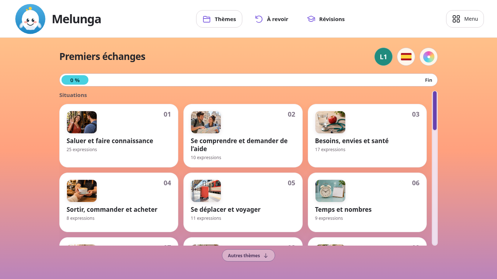
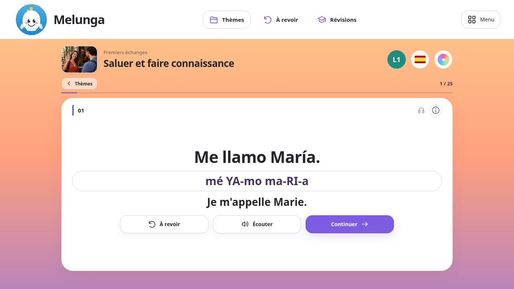
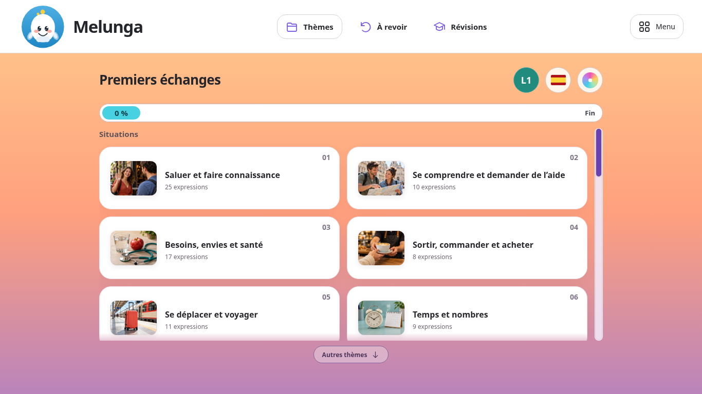
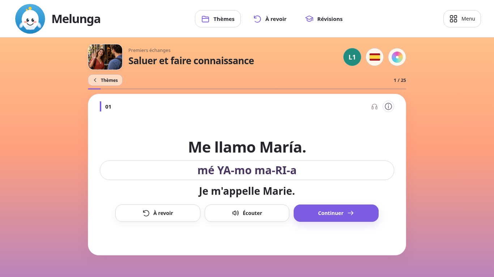
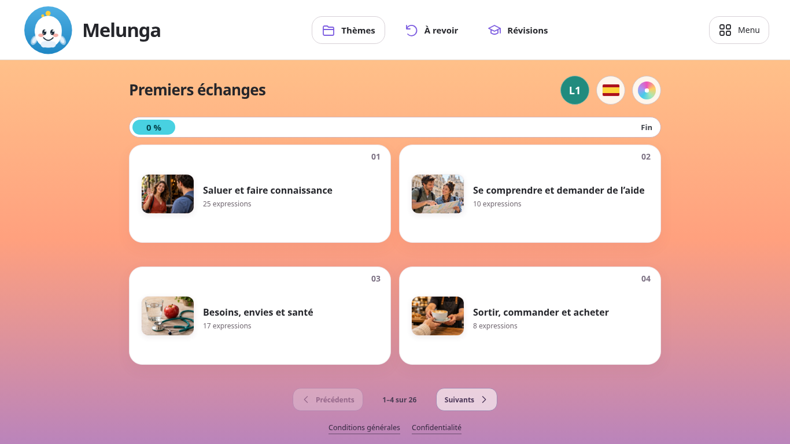
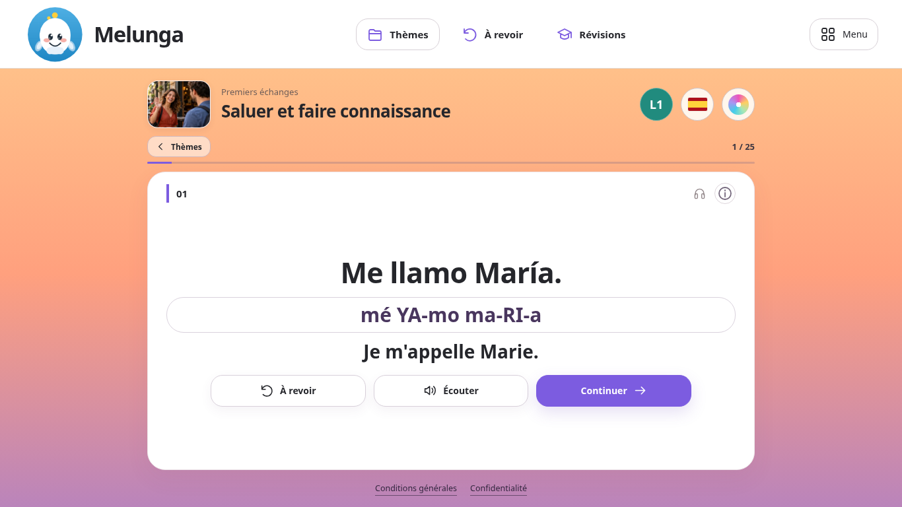

1 · Vue centrée
Trois colonnes et une barre de défilement bien visible.


Télécharger Thèmes · Télécharger Leçon2 · Lecture calme
Notre préférence : la 2. Deux colonnes, des photos à gauche et plus d’espace pour lire.
Maquettes ordinateur — le parcours publié reste inchangé tant que tu n’as pas choisi. La lecture audio est simulée ; aucune progression n’est enregistrée.
Les conditions générales restent accessibles dans Menu. La 3 montre aussi deux liens discrets en pied de page, sans ajouter leur texte à la leçon.
Préparation des maquettes…
Sur téléphone, les captures permettent de comparer les maquettes. La présentation de l’application mobile reste inchangée.
Trois colonnes et une barre de défilement bien visible.


Télécharger Thèmes · Télécharger LeçonDeux colonnes, les photos à gauche et davantage de respiration.


Télécharger Thèmes · Télécharger LeçonQuatre thèmes à la fois, des boutons pour accéder aux suivants.


Télécharger Thèmes · Télécharger LeçonLes maquettes ne modifient pas le parcours publié. Les conditions générales peuvent rester dans le menu ; il n’est pas nécessaire d’afficher leur texte dans l’espace de lecture.